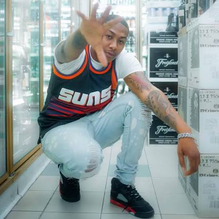
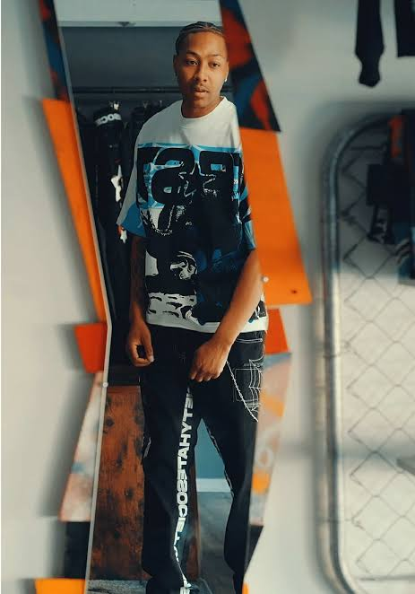
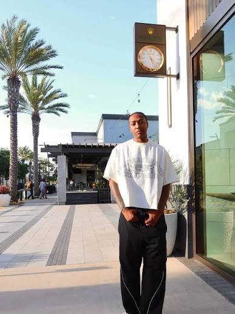
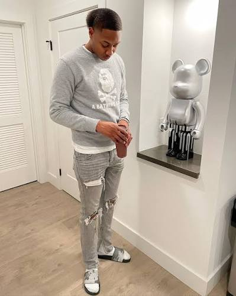

Sample content — to be replaced with the artist's own
B3 GLIZZY / Press kit
PRESSKIT.
Public. No form, no password, no email gate. Everything as one ZIP: 212 MB (demo build, not included). Every item is listed individually below.
01 · BIOS
B3 Glizzy is an independent hip-hop artist from San Diego, California. His releases include the singles Shag OT, Ghetto Rockstar, Peaches & Lean, Park Star and San Diego Sippers, and the 2026 album Press Play.
B3 Glizzy is an independent hip-hop artist from San Diego, California.
His album Press Play, eleven tracks, was released on 10 June 2026 through Ghetto Rockstar Records. Earlier releases include the singles Shag OT, Peaches & Lean, Park Star and San Diego Sippers, and the 2021 album Ghetto Rockstar.
His music is on Apple Music and Spotify, where he is a verified artist, and he posts to TikTok as @b3.glizzy.
Long bio: to be written with the artist. The short and medium bios above are drafted from public sources (Apple Music, Spotify, TikTok) and should be confirmed before use.
02 · PHOTOS
Approved for editorial use in connection with coverage of B3 GLIZZY. The photographer's credit must run with the image. No cropping that removes the credit, no compositing, no commercial use without written permission.




Download: demo build, file not includedPhoto: to be supplied
Download: demo build, file not includedPhoto: to be supplied
Build note: photographer and director credits are contractual in most agreements, video crew credits are the most commonly stripped credits in hip-hop, and for a real client every name and licence term is confirmed before launch.
03 · COVER ART
- PRESS PLAY (2026) · cover art 3000 × 3000 JPGto be supplied by the artist
- GHETTO ROCKSTAR (2021) · cover art 3000 × 3000 JPGto be supplied by the artist
- Single artwork · Shag OT, Peaches & Lean, Park Star, San Diego Sippersto be supplied by the artist
04 · LOGO
{kind=link}
{kind=link}
The name is always all caps. The wordmark is always stacked, CASS over EMORY, flush left, with EMORY tracked to the width of CASS. Never recoloured outside ink and bone, never outlined, never re-set in a different face.
05 · VIDEO ASSETS
<iframe src="https://www.youtube-nocookie.com/embed/VIDEO_ID?rel=0" title="CONCRETE CHOIR — B3 GLIZZY (official video)" width="1280" height="720" allow="encrypted-media; picture-in-picture; fullscreen" loading="lazy"></iframe>
- CONCRETE CHOIR · 9:16 vertical cut · 15 s · silent · 720 × 1280 MP4Download · 792 KB
- CONCRETE CHOIR · still frames · 6 × JPGdemo, not included
The vertical cut is silent and built from licensed stock stand-in stills (Demo stand-in image: Mathias Reding / Pexels; Demo stand-in image: Lukas Rychvalsky / Pexels; Demo stand-in image: Nascimento Vieira / Pexels).
06 · STAGE PLOT
SOLO WITH DJ
| In | Source | Mic / DI |
|---|---|---|
| 1 | CASS vocal | Wireless handheld |
| 2 | Spare vocal | Wireless handheld, on a stand |
| 3–4 | DJ mixer L/R | Stereo DI from 2-channel mixer (2 media players) |
Written out: CASS downstage centre on a wireless handheld with a spare on a stand stage left of him. DJ booth upstage centre with two media players either side of a 2-channel mixer. Two wedges on two mixes: mix 1 downstage centre facing CASS, mix 2 beside the booth for the DJ.
WITH BAND
| In | Source | Mic / DI |
|---|---|---|
| 1–2 | CASS vocal + spare | Wireless handheld ×2 |
| 3–4 | DJ mixer L/R | Stereo DI |
| 5–6 | Keys L/R | DI pair |
| 7 | Bass | DI |
| 8 | Guitar amp | Dynamic instrument mic |
| 9 | Kick | Kick mic |
| 10 | Snare | Dynamic |
| 11 | Hi-hat | Small condenser |
| 12–13 | Overheads L/R | Small condensers |
Written out: Drums upstage centre. DJ booth upstage, stage left of the kit. Keys stage right, bass between keys and centre, guitar amp stage left. CASS downstage centre. Four wedges on three mixes: mix 1 for CASS downstage centre; mix 2 on two wedges, one between keys and bass and one between guitar and the booth; mix 3 for drums at the kit.
- Stage minimum
- Solo with DJ: 4 m × 3 m. With band: 7 m × 5 m.
- Changeover
- Solo with DJ: 10 minutes. With band: 25 minutes.
- Set lengths
- 25 minutes support · 45 minutes headline · 60 minutes headline with band
- Plot PDF
- demo build, not included
07 · ADMIN FACTS
- Artist name
- B3 GLIZZY (all caps; never Cass Emery, never Kass)
- Status
- Independent. Masters owned by the artist.
- Distributor
- Eastside Independent Distribution
- Publishing
- Second Shift Songs (ASCAP), administered independently
- Versions
- Explicit and clean versions of every single exist. See servicing.
- Band
- Lyle Banks (bass) · Nadia Fontenot (keys) · Theo Castille (drums) · Ruben Salas (guitar)
- Producers
- Dre Villanueva · Lyle Banks · Nadia Fontenot · Kemi Adebayo
- Directors
- Rome Aguilar · Ines Okonkwo · Sawyer Pike
- Photographers
- Dessa Villareal · Rome Aguilar · Marquis Odom
- ISRCs
- Available on request from management
08 · CONTACTS
Management
management@b3glizzy.demoSync and licensing
sync@b3glizzy.demoMasters and publishing both controlled independently, so clearance is one conversation and it is usually fast.
Features and verses
features@b3glizzy.demoSend the record, the budget and the deadline in the first email. All three, or it does not get read.
Beats
Unsolicited beat packs are not opened. Production on the records comes from four people who have worked on everything since 2024. If that changes it will be said here first.
09 · ONE-SHEET
One printable page: photo, 60-word bio, current release, three press quotes, set options, contacts.
One-sheet PDF: demo build, not included.
ILLUSTRATIVE PRESS QUOTES — INVENTED PUBLICATIONS, DEMO CONTENT
“Writes about work the way most people write about love, which is to say constantly and without needing to explain it.”
— Hardpan Quarterly“The videos and the records are clearly made by the same person on the same afternoon, and that is the whole appeal.”
— Second Line Review“Six weeks between songs is a ridiculous pace to keep and he has kept it for two years.”
— The Overpass Review